4.3 Designing the Watering Can
For making my watering can I again used Fusion 360. Instead of a circle this time I used an ellipse. However unlike the flower pot I wanted this watering can to have a smaller neck than the body, this will not allow water to splash while walking with it. Hence, I made two elipses: an inner ellipse and an outer ellipse. The inner ellipse is only 2 mm smaller than the outer ellipse.
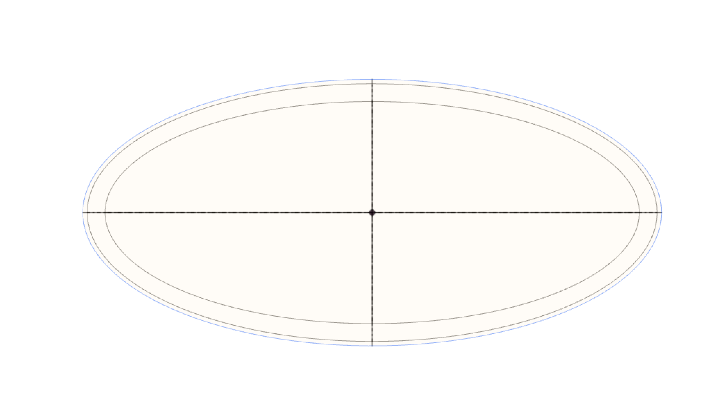This allows me to make a shell to my object by extruding the area between the inner ellipse and outer ellipse. However, this is still a cylinder and I want it to have a smaller neck.
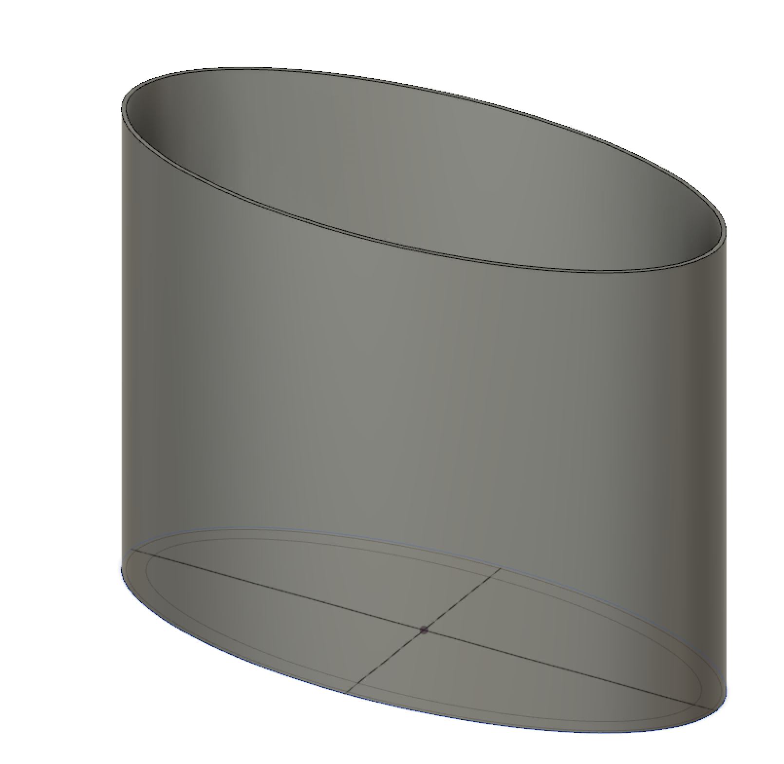For making the neck of the elliptical cylinder, I used the "Draft" tool to incline the inside of the shell. This made the neck part smaller and the bottom part larger.
However, this caused a gradual change between the neck and the bottom part which caused the inside of the watering can look like a cone. For solving this, I again used the "extrusion" tool and this time selected the inner ellipse and chose the cut option this allowed me to cut the cone part until the neck.
Before Cut:
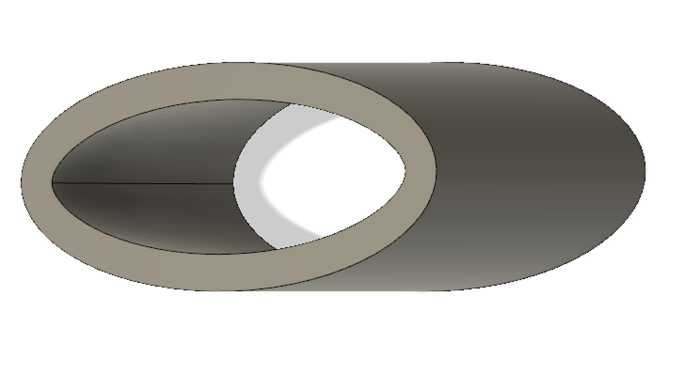After Cut:
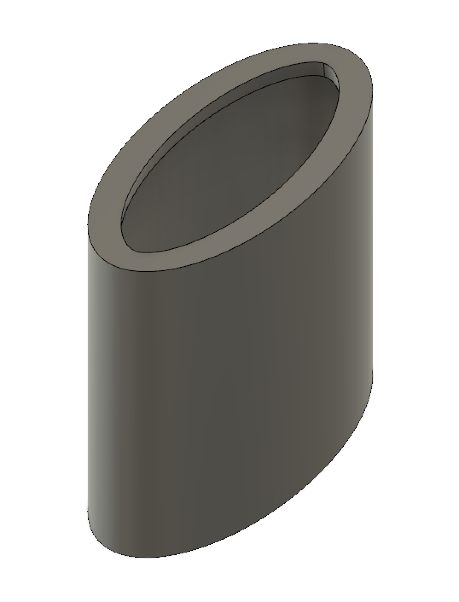After doing this, it made the neck smaller however this time the neck was not properly supported so I had to support it by making it a bit inclined. For this I used the "Chamber" Tool which allowed me to select one of the corners on the neck and make it inclined. After that, I moved on to making a extention to the body which will be the part where the water is dispersed. For this, I had to make it inclined so that the water wouldn't just flow out of the watering can. I did that by going on the the sketch mode and this time looking at my object from side view and drew a line whith an upwards incline:
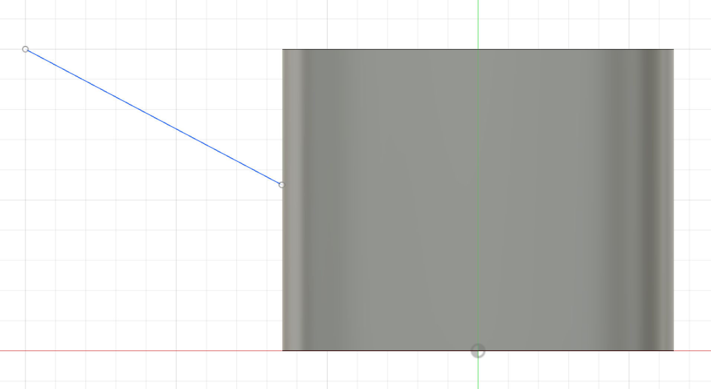For turning that line into a pipe, I just used the "pipe" tool to make a hollow cylinder and I moved it a bit to the right to align with the main body. However, this caused it do go through thee object and for that I used the "cut" option on "extrude" tool to clean cut the excess material.
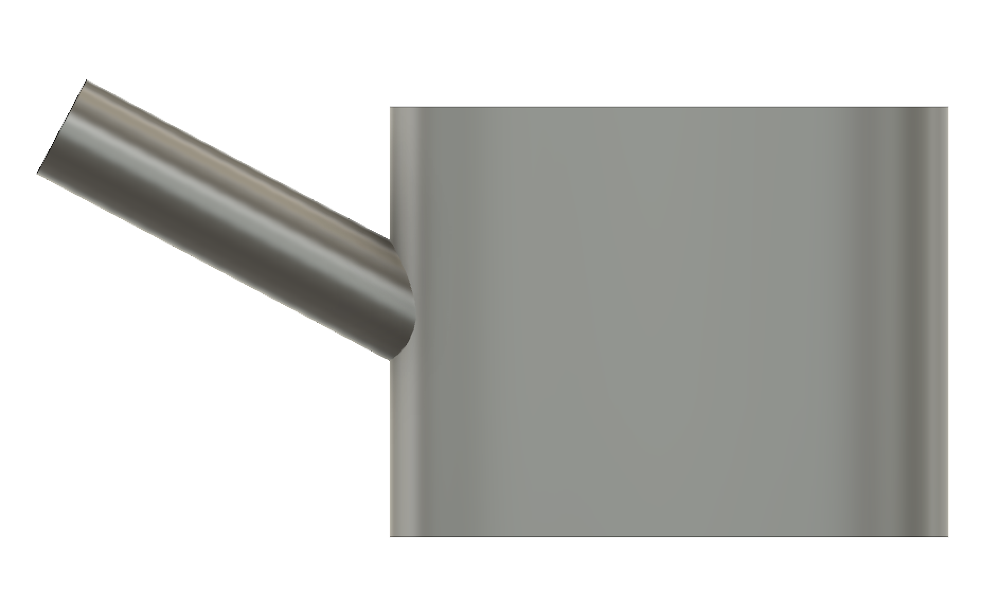Now that I have the pipe part of the Watering Can, I need to have a head to it with lots of holes on top of it. For doing that I again used the sketch mode however this time I selected the tip of the pipe to draw on. This allowed me to draw on top of the pipe and not anywhere else. After that I drew a bigger circle on the tip of the pipe:
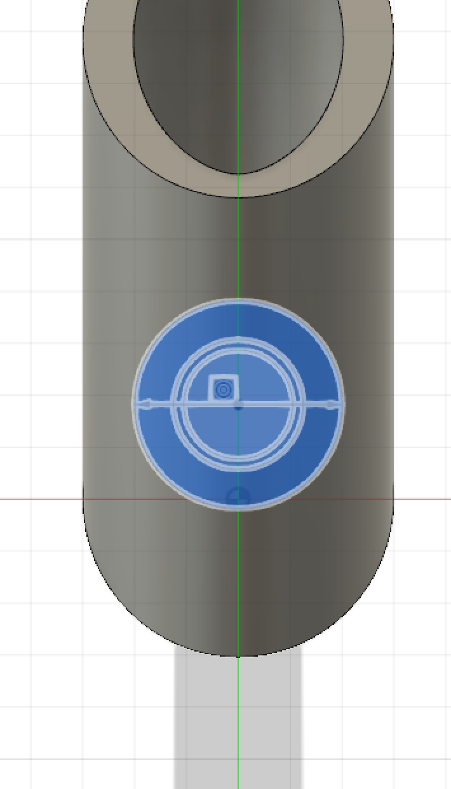After this I used the "extrude" tool to make a small cylinder on top of the pipe. However, I want it to be a cone without the top part, hence, I used the "draft" tool to incline the outer and the inner walls of the cylinder and turned it into a cone without a top.
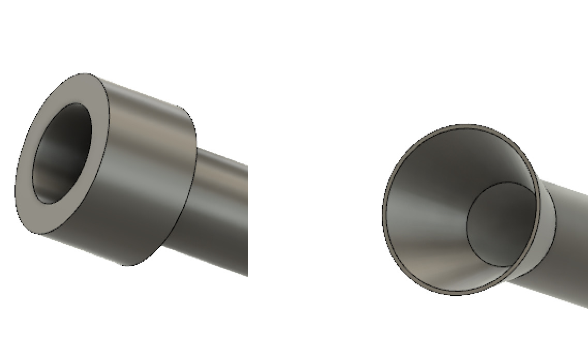
After this I had to close the top of it and have small holes on it so that the water can disperse in a more calm manner which wouldn't hurt the plant or make a hole in the soil. For this I again use the sketch and I select the tip of the cone to draw on.
Again I draw a circle but this time the same size as the tip of the cone. However, if I were to extrude this it would be a solid piece. Thus, I made small circles in that big circles and only extruded the area that is the big circle and not the small circle.
After drawing this, I extruded it and I got the lid with holes:
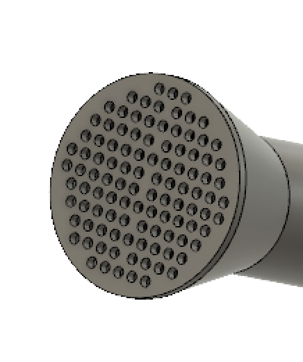After making the lid, now I have to make a handle to the Watering Can so I can actually use it. For this I again go into the sketch mode and I look at the Watering Can from the side view. Than, I draw a line in the shape of a handle. This allows me to use the line as a template to create my handle as I created the pipe for the Watering Can.
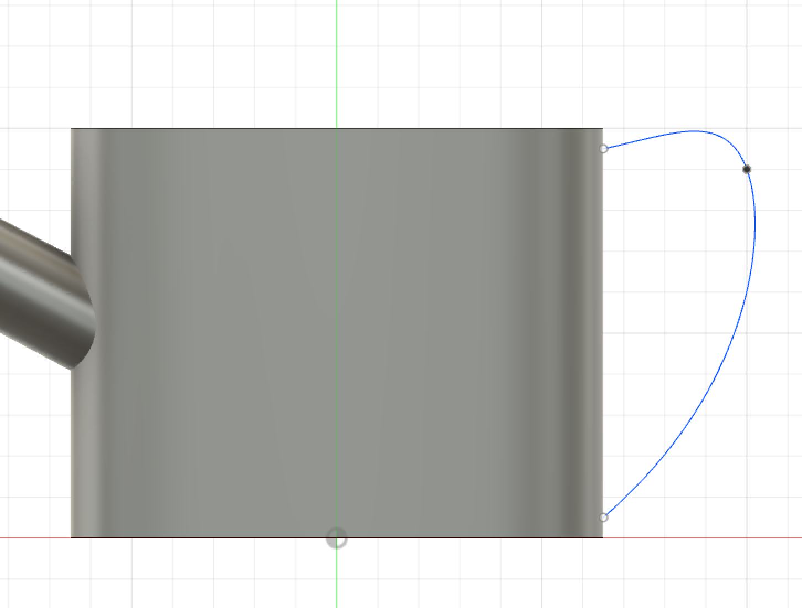
After drawing the line, I was able to use the "Pipe" tool to make a handle and I moved it to the left to make it fully connected to the main body. However, this made it has some excess parts in the main body that I cutted out using the extrude tool.
The handle looks like this:
At the end, the end result of the Watering Can looked like this:
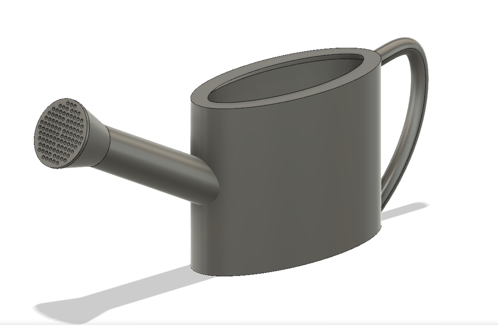It might be really hard to print because it's hollow and that requires lots's of support, however, by making the size small, it might be eligable to 3D print.